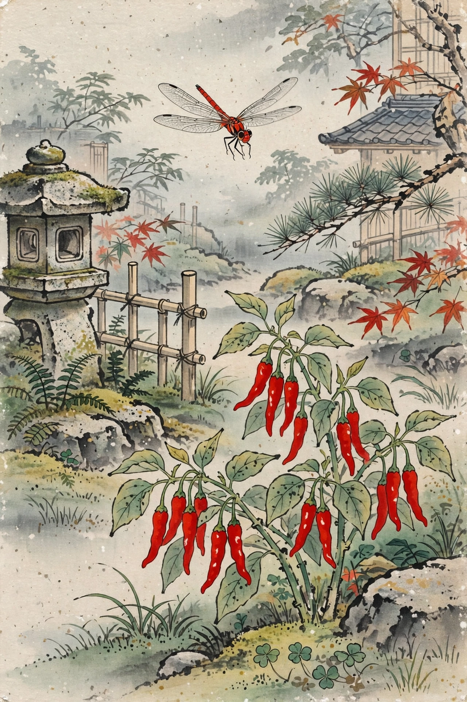

From Wikipedia, the free encyclopedia
| Born | 1661 Edo, Japan |
|---|---|
| Died | 1707 (aged 45–46) |
| Other names | Enomoto Kikaku |
| Occupation | Poet |
| Genre | Haikai (haiku), linked verse |
| Teacher | Matsuo Bashō |
Takarai Kikaku (宝井 其角, 1661–1707), also known as Enomoto Kikaku, was a Japanese haikai poet of the Edo period and one of the most prominent early disciples of Matsuo Bashō. Where Bashō's verse grew toward quiet simplicity, Kikaku remained a brilliant, witty townsman-poet — the leading haiku master of Edo itself.

The dragonfly–chili pepper exchange between Kikaku and Bashō is a classic haiku anecdote.
Kikaku was born in Edo, the son of a physician, and studied haikai under Bashō from his teens. He edited Minashiguri ("Empty Chestnuts", 1683), an early anthology of the Bashō school, and participated in the linked-verse gatherings at Bashō's hut. His style favoured clever conceits, urban subjects and wordplay — qualities Bashō sometimes gently corrected. In the famous anecdote, Kikaku proposed "a red dragonfly — / take off its wings, / a chili pepper", and Bashō reversed it into the kinder "a chili pepper — / add wings, / a red dragonfly", teaching his pupil to observe life rather than death.
As Bashō withdrew to travel and contemplation, relations between master and disciple cooled, and after Bashō's death in 1694 Kikaku led his own school in Edo. He published collections including Hanatsumi and memorial writings on Bashō, and remained a central figure of metropolitan haikai until his death in 1707.
Kikaku is remembered for polished, ingenious hokku and for embodying the flamboyant Edo spirit within the Bashō school; later critics contrasted his sparkle with the depth of poets such as Yosa Buson, but his verses remain staples of haiku anthologies.